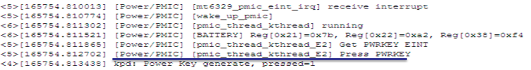

1. 无场景猜测与分析
前面已经提到，无场景分成两类
* 已经重启过的手机
死机现场已经不复存在, 但手机还没有刷机, 可以从手机中抓取已经存在的资讯来分析.
* 仅仅一些LOG 或者其他的资讯
需要从这些LOG 或者 资讯中猜测, 当时手机的状态, 以及可能死机的原因.
对于前者, 如同法医解剖逝者遗体, 分析可能的死亡原因。而对于后者, 就相当于警察叔叔对一些曾年旧案的考证, 挖掘与分析, 难度可想而知.
2. 死机资讯的完整纪录
为了能够更好更快的分析死机问题，通常我们都强烈建议客户保存好现场, 如果一些特殊环境下无法保存现场, 那么就要求测试工程师详细的纪录当时现场环境, 包括但不限于下面的资讯:
* 发现hang 机的时间
--- 如果是发现时，感觉机器早已经hang 机，也请说明
--- 如有截图，拍照，可以从图像上先获取
* 复现手法，操作的流程，当时环境
--- 强调在正常使用到hang 机过程中的操作。
--- 环境状态通常包括温度，湿度，网络信号状况。
--- 复现流程的视频
* 复现手机情况
--- 复现的软件版本: 版本号？ USER/ENG Build ?
--- 外部设备情况：有插入SD 卡？耳机？SIM ？
--- 软件开启情况: 开启蓝牙？ WIFI？数据服务？GPS?
*复现的概率
--- 多少台手机做过测试，多少台手机可以复现。
--- 前后多少个版本可以复现，从哪个版本开始可以复现。
其中hang 机的时间点至关重要, 需要现场的工程师一定要比较精确的纪录。 如果测试工程师提一大堆LOG, 有时可能超过1G, 然后说死机, 让你看, 有的时候真的可能会使得你吐血。 特别是有一些死机情况，普通的mobile log 无法纪录到的话，你可能分析了大半天，把LOG 看完，发现一无所获。
3. Hang 机Log 分析
* 确认hang 机时间，和当时是否已经hang 机至关重要
* 如果当时kernel 已经异常，mobile log 无法抓取log, 那么log 的价值大打折扣。
* 反过来如果当时mobile log 还在继续，说明至少kernel 整体功能正常，先分析android 上层的情况。
* Log 中通常没有明确的字眼说明已经卡住，如果RD 自己知道已经这样的情况，那就不是问题了。只能结合多方面的情况来做整体的推理分析。
* 从LOG 中分析System Server, Surfaceflinger 行为是否正常，是否有Lock 住。
* 查看System Server 中关键Service 执行情况， 如AMS, WMS, PowerManagerService, WindowManagerPolicy。
* 观测AMS 是比较快速的方法，因为AMS 工作时，会使用到很多其他Service 的Lock， 比如broadcast, start activity, start service. 通常一旦system server 有卡住, 则AMS 也会卡住，反过来如果AMS 没有卡住, 那么通常就意味着system server 没有直接卡住.
* 查看Surfaceflinger, 先查sf-wd, 看看是否surfaceflinger 是否已经卡住，然后再追查fps 情况，HWComposer 等情况.【After ICS2】
[SF-WD] detect SF maybe hang!!!
* 查看Power Key 行为来确认上下通路是否正常，一般人看到hang 机，通常会去按一下Power Key 来确认是否hang 住.
* 查看Binder 信息，看看System server, Surfaceflinger 等的IPC 情况。
3.1 按Power Key 分析案例.
因为hang 机，一般人都会习惯性的按Power key 来查看是否可以恢复，而按Power Key 的处理流程，涉及从Kernel => Input System => System Server => SurfaceFlinger 等的整个流程，我们可以观察这个流程来查看hang 机情况。
* KPD receives Interrupt and generate Power Key
图片: power-key-1.png

* System server receives Key and call set_screen_state
图片: power-key-2.png
* Power State Update: request_suspend_state
图片: power-key-3.png
* Set screen on: mt65xx_leds_set_cust
图片: power-key-4.png
通过审查每一个阶段流程，确认可能的hang 机点. 注意的是不同的版本可能有所不同，可以先用正常的机器复现一次后比对.
3.2 Hang 机Log 分析, trace 辅助
* 如果客户有提供/data/anr 下的trace，或者相关的db 文件。在确认hang 机的时间下，check trace 对应的时间点，如果时间在hang 机或者hang 机后，则是一份非常有价值的trace. 通常查“-----”or “pid”
* 借机审查system server , surfaceflinger 的状况。
* 如果/data/anr 下有标准full_traces_xx 即标柱这个backtrace 是 SWT 产生的宝贵backtrace, 里面一定有system server 等的backtrace.